SP-ACTA-2016-04-26 · 2016-04-26
26 abril 2016 · Comunidad/Pamanil
Perímetro adverso alegado · AAS/FMMM/Cogolludo/Pamanil
C1 Adverso alegado · AAS → FMMM/Cogolludo/PamanilPrimera secuencia atribuida por Gil: AAS → FMMM/Cogolludo/Pamanil. Cada persona, sociedad, cargo, representación y acto se prueba por separado; no es un hallazgo de culpabilidad.
Capacidad y secuencia atribuidas
Mandatos separados; transiciones visibles.
Secuencia atribuida por Gil Marer y clasificación documental del proyecto. Cada persona, sociedad, cargo, representación y acto se mantiene separado y debe probarse fuente por fuente. No es un hallazgo judicial de conspiracion, fraude, finalidad criminal, responsabilidad o culpabilidad.
Representante de Luchy Playa Blanca, S.L.U. (LPB).; La lista de representación controlada también la vincula a Mariano Palacios Fernández.
ACTA de 26-Apr-2016 y lista/mapa de asistencia y representación de su paquete de 77 páginas.aas-fmmm-cogolludo-pamanil-overlap · AAS → FMMM_COGOLLUDO_PAMANIL
Control de identidad: Patricia Isabel Domínguez Montelongo y Laura Patricia Acosta Matos son personas distintas; nunca se usa 'Patricia' para fusionarlas. Límite de inferencia: Estas representaciones son específicas de este evento; no prueban que actuara por la Comunidad, CEXP, Aweswell o Pink Canary Services ni se trasladan a otra reunión.
Quién convocó o generó el registro
El ACTA identifica a Asunción Aizpurúa Sánchez como presidenta y a Francisco Matos Matas como administrador; la cadena de convocatoria de 15–20 abril está registrada por separado.
Base de la clasificación
Carril AAS/FMMM/Cogolludo/Pamanil atribuido por Gil al perímetro adverso. El acta contiene la versión de ese órgano, el historial litigioso y las objeciones LPB; mantiene separados actores y capacidades y no adjudica criminalidad.
Abrir texto público redactadoPDF de edición textualFacsímil fuente expurgadoManifiesto de integridadProcedenciaRegistro de expurgaciónÍndice máquina de continuidadRegistro fuente y comunicaciones
Límite: La familia controlante contiene 77 páginas. Sus dos binarios son visual y textualmente equivalentes; los paquetes de 24, 47 y 50 páginas son parciales. Las páginas 14-77 son anexos reservados íntegramente en la copia pública.
Familia documental
Cada aviso, ACTA, anexo, circulación, ejecución y uso conserva su propio ID.
Una entrada no convierte un correo en ACTA ni la recepción en autoridad, validez o intención.
SP-EVT-2016-04-13-PWC-TRANSMISSION
2016-04-13 · Transmisión por correo de material jurídico y ACTAS
- Emisor / remitente
- Remitente del lado del proyecto; identidad reservada
- Capacidad
- Función de transmisión de fuente de parte; no se infiere adopción independiente
- Destinatarios
- Asesores de PwC; destinatarios/capacidades exactos reservados o incompletos
- Órgano / convocante
- No es un órgano de reunión · No aplicable
- Procedencia
- Correo contemporáneo directo localizado
- Público / privado
- Nativo privado/metadatos aptos para publicación o derivado redactado
- Cuestiones abiertas
- Siguen abiertos los hashes de adjuntos, los destinatarios/capacidades exactos y la revisión de privilegio
- Página / motivo
- La entrada canónica o la aparición secundaria enlazada evita duplicar una ruta autónoma y mantiene procedencia, estado público/privado y relaciones dentro de las familias documentales del evento.
- Relaciones
SP-EVT-2016-04-15-CONVOCATION-CHAIN
2016-04-15–2016-04-20 · Paquete de convocatoria, orden del día y análisis
- Emisor / remitente
- Emisor(es) del aviso comunitario y partes que lo reenviaron; cadena exacta de remisión dependiente de cada fuente
- Capacidad
- Capacidades de cargo comunitario/reenviador no conciliadas por completo
- Destinatarios
- Propietarios y destinatarios de reenvío; lista completa de notificación no localizada
- Órgano / convocante
- Comunidad de Propietarios · Carril presidencia/administración consignado en ACTAS posteriores
- Procedencia
- Cadena directa de convocatoria/orden del día/solicitud de fuente localizada en correo y custodia Drive
- Público / privado
- Nativo privado/metadatos aptos para publicación o derivado redactado
- Cuestiones abiertas
- Siguen abiertas la notificación, los adjuntos, los hashes, el mapa de páginas fotografiadas, los destinatarios y la revisión de privilegio/privacidad
- Página / motivo
- La entrada canónica o la aparición secundaria enlazada evita duplicar una ruta autónoma y mantiene procedencia, estado público/privado y relaciones dentro de las familias documentales del evento.
- Relaciones
SP-EVT-2016-04-20-RECORD-REQUEST
2016-04-20 · Solicitud de registros e impugnación de deuda
- Emisor / remitente
- Solicitante del lado del proyecto/LPB
- Capacidad
- Solicitante de parte; la capacidad exacta del firmante requiere revisión de la fuente
- Destinatarios
- Presidencia y administración de la Comunidad
- Órgano / convocante
- Contexto de la Comunidad de Propietarios · No aplicable
- Procedencia
- Comunicación localizada
- Público / privado
- Nativo privado/metadatos aptos para publicación o derivado redactado
- Cuestiones abiertas
- Siguen abiertas la entrega, la respuesta y los adjuntos completos
- Página / motivo
- La entrada canónica o la aparición secundaria enlazada evita duplicar una ruta autónoma y mantiene procedencia, estado público/privado y relaciones dentro de las familias documentales del evento.
- Relaciones
SP-EVT-2016-04-21-AC-PWC-AUTHORITY
2016-04-21 · Comunicación de autoridad o negativa
- Emisor / remitente
- Corresponsales de la línea AC/PwC/LPB; remitente original no resuelto
- Capacidad
- Capacidades procesales/de asesoría referidas; no se infiere mandato más amplio
- Destinatarios
- Destinatarios de la línea de trabajo; cadena original completa no localizada
- Órgano / convocante
- Contexto de convocatoria de la Comunidad de Propietarios · No aplicable
- Procedencia
- Copias reenviadas/directas localizadas; cadena RFC822 original incompleta
- Público / privado
- Nativo privado/metadatos aptos para publicación o derivado redactado
- Cuestiones abiertas
- Siguen abiertos el original nativo, las cabeceras, el cuerpo/adjuntos completos, las capacidades y la revisión de privilegio
- Página / motivo
- La entrada canónica o la aparición secundaria enlazada evita duplicar una ruta autónoma y mantiene procedencia, estado público/privado y relaciones dentro de las familias documentales del evento.
- Relaciones
SP-EVT-2016-04-26-COM-MEETING
2016-04-26 · Corpus de ACTA y anexos
- Emisor / remitente
- Comunidad de Propietarios
- Capacidad
- Funciones de presidencia y administración consignadas
- Destinatarios
- Propietarios/participantes; denominador completo de poderes/coeficientes/voto no resuelto
- Órgano / convocante
- Junta ordinaria de la Comunidad de Propietarios · Asunción Aizpurúa Sánchez, presidenta; Francisco Matos Matas, administrador
- Procedencia
- Dos binarios de 77 páginas y paquetes parciales preservados; familia de control digitalizada públicamente
- Público / privado
- Nativo privado/metadatos aptos para publicación o derivado redactado
- Cuestiones abiertas
- Siguen abiertas la verificación manual línea por línea, el libro oficial/audio/poderes, la conciliación fuente-cuentas y las relaciones entre variantes
- Página / motivo
- La entrada canónica o la aparición secundaria enlazada evita duplicar una ruta autónoma y mantiene procedencia, estado público/privado y relaciones dentro de las familias documentales del evento.
- Relaciones
SP-EVT-2016-06-10-DEBT-ANALYSIS
2016-06-10–2016-06-11 · Análisis posterior al ACTA de gastos y deuda
- Emisor / remitente
- Jonathan Simó y colaboradores de la línea de trabajo proyecto/PwC
- Capacidad
- Capacidades profesionales/contables y analíticas de parte; no auditoría independiente ni decisión judicial
- Destinatarios
- Destinatarios jurídicos/de asesoría del proyecto; lista completa exacta reservada/incompleta
- Órgano / convocante
- Línea de trabajo profesional; vinculada al ACTA de 26 de abril, no reunión de órgano · No aplicable
- Procedencia
- Informe nativo y línea de hoja de cálculo/correo localizados; fórmulas/soporte fuente incompletos
- Público / privado
- Nativo privado/metadatos aptos para publicación o derivado redactado
- Cuestiones abiertas
- Siguen abiertas la extracción controlada, las fórmulas, las facturas/cuentas, la versión exacta utilizada y la revisión de privilegio
- Página / motivo
- La entrada canónica o la aparición secundaria enlazada evita duplicar una ruta autónoma y mantiene procedencia, estado público/privado y relaciones dentro de las familias documentales del evento.
- Relaciones
SP-EVT-2022-05-03-10-ACTA-TRANSMISSION
2022-05-03–2022-05-10 · Transmisión por correo de ACTAS y material relacionado
- Emisor / remitente
- Corresponsales privados; identidades minimizadas en el registro público
- Capacidad
- Remitentes/reenviadores de documentos; no se infiere verdad, adopción ni conocimiento previo a la reunión
- Destinatarios
- Destinatarios privados; capacidades exactas incompletas
- Órgano / convocante
- No es un órgano de reunión · No aplicable
- Procedencia
- Correspondencia directa y adjuntos localizados
- Público / privado
- Nativo privado/metadatos aptos para publicación o derivado redactado
- Cuestiones abiertas
- Siguen abiertas las cabeceras nativas, los hashes de adjuntos, los destinatarios directos frente a indirectos, el acuse y el uso posterior
- Página / motivo
- La entrada canónica o la aparición secundaria enlazada evita duplicar una ruta autónoma y mantiene procedencia, estado público/privado y relaciones dentro de las familias documentales del evento.
- Relaciones
SP-REL-2016-CONCURSO-DEBT
2012 onward; reliance documented through 2016 and later · Registro de uso concursal de deuda
- Emisor / remitente
- Acreedores/cargos comunitarios, participantes concursales y actores judiciales según se documentan por separado
- Capacidad
- La capacidad de cada escrito/certificado/revisión debe probarse por separado
- Destinatarios
- Administración concursal, órgano judicial y partes procesales
- Órgano / convocante
- No es un órgano de reunión · No aplicable
- Procedencia
- Copias primarias y menciones posteriores mixtas; cadena completa de presentación incompleta
- Público / privado
- Registros concursales privados/públicos mixtos
- Cuestiones abiertas
- Siguen abiertas la transmisión escrito por escrito, la conciliación de deuda, la revisión de la AC, la convocatoria y el uso judicial
- Página / motivo
- La entrada canónica o la aparición secundaria enlazada evita duplicar una ruta autónoma y mantiene procedencia, estado público/privado y relaciones dentro de las familias documentales del evento.
- Relaciones
SP-SRC-ACTA-2016-04-26-A
2016-04-26 · Copia fuente de ACTA
- Emisor / remitente
- Junta ordinaria de la Comunidad de Propietarios
- Capacidad
- Órgano de reunión o evento registrado; las capacidades individuales dependen de cada fuente
- Destinatarios
- Destinatarios/participantes históricos según se consignan por separado; denominador completo original de destinatarios/notificación no resuelto
- Órgano / convocante
- Junta ordinaria de la Comunidad de Propietarios · Constan Asunción Aizpurúa Sánchez como presidenta y Francisco Matos Matas como administrador.
- Procedencia
- Familia A de control de setenta y siete páginas localizada
- Público / privado
- Fuente nativa/de control privada; facsímil raster redactado irreversiblemente, galería de páginas fuente, edición textual OCR y PDF de edición textual públicos disponibles en la página enlazada del evento
- Cuestiones abiertas
- Siguen abiertas la verificación manual, el libro oficial/audio/poderes y las cuentas
- Página / motivo
- La entrada canónica o la aparición secundaria enlazada evita duplicar una ruta autónoma y mantiene procedencia, estado público/privado y relaciones dentro de las familias documentales del evento.
- Relaciones
SP-SRC-ACTA-2016-04-26-B
2016-04-26 · Copia fuente de ACTA
- Emisor / remitente
- Junta ordinaria de la Comunidad de Propietarios
- Capacidad
- Órgano de reunión o evento registrado; las capacidades individuales dependen de cada fuente
- Destinatarios
- Destinatarios/participantes históricos según se consignan por separado; denominador completo original de destinatarios/notificación no resuelto
- Órgano / convocante
- Junta ordinaria de la Comunidad de Propietarios · Constan Asunción Aizpurúa Sánchez como presidenta y Francisco Matos Matas como administrador.
- Procedencia
- Familia B distinta de setenta y siete páginas localizada
- Público / privado
- Fuente/variante preservada privadamente; sólo metadatos y relación aptos para publicación salvo inclusión en el paquete enlazado de copia de control
- Cuestiones abiertas
- Siguen abiertas la diferencia binaria, el libro oficial/audio/poderes y las cuentas
- Página / motivo
- La entrada canónica o la aparición secundaria enlazada evita duplicar una ruta autónoma y mantiene procedencia, estado público/privado y relaciones dentro de las familias documentales del evento.
- Relaciones
SP-SRC-ACTA-2016-04-26-C
2016-04-26 · Copia fuente de ACTA
- Emisor / remitente
- Junta ordinaria de la Comunidad de Propietarios
- Capacidad
- Órgano de reunión o evento registrado; las capacidades individuales dependen de cada fuente
- Destinatarios
- Destinatarios/participantes históricos según se consignan por separado; denominador completo original de destinatarios/notificación no resuelto
- Órgano / convocante
- Junta ordinaria de la Comunidad de Propietarios · Constan Asunción Aizpurúa Sánchez como presidenta y Francisco Matos Matas como administrador.
- Procedencia
- Paquete parcial de veinticuatro páginas localizado en la familia C
- Público / privado
- Fuente/variante preservada privadamente; sólo metadatos y relación aptos para publicación salvo inclusión en el paquete enlazado de copia de control
- Cuestiones abiertas
- Siguen abiertas la relación de inclusión/anexo y las páginas ausentes
- Página / motivo
- La entrada canónica o la aparición secundaria enlazada evita duplicar una ruta autónoma y mantiene procedencia, estado público/privado y relaciones dentro de las familias documentales del evento.
- Relaciones
SP-SRC-ACTA-2016-04-26-C-47P
2016-04-26 · Copia fuente de ACTA
- Emisor / remitente
- Junta ordinaria de la Comunidad de Propietarios
- Capacidad
- Órgano de reunión o evento registrado; las capacidades individuales dependen de cada fuente
- Destinatarios
- Destinatarios/participantes históricos según se consignan por separado; denominador completo original de destinatarios/notificación no resuelto
- Órgano / convocante
- Junta ordinaria de la Comunidad de Propietarios · Constan Asunción Aizpurúa Sánchez como presidenta y Francisco Matos Matas como administrador.
- Procedencia
- Paquete parcial de cuarenta y siete páginas localizado en la familia C
- Público / privado
- Fuente/variante preservada privadamente; sólo metadatos y relación aptos para publicación salvo inclusión en el paquete enlazado de copia de control
- Cuestiones abiertas
- Siguen abiertas la relación de inclusión/anexo y las páginas ausentes
- Página / motivo
- La entrada canónica o la aparición secundaria enlazada evita duplicar una ruta autónoma y mantiene procedencia, estado público/privado y relaciones dentro de las familias documentales del evento.
- Relaciones
SP-SRC-ACTA-2016-04-26-C-50P
2016-04-26 · Copia fuente de ACTA
- Emisor / remitente
- Junta ordinaria de la Comunidad de Propietarios
- Capacidad
- Órgano de reunión o evento registrado; las capacidades individuales dependen de cada fuente
- Destinatarios
- Destinatarios/participantes históricos según se consignan por separado; denominador completo original de destinatarios/notificación no resuelto
- Órgano / convocante
- Junta ordinaria de la Comunidad de Propietarios · Constan Asunción Aizpurúa Sánchez como presidenta y Francisco Matos Matas como administrador.
- Procedencia
- Paquete parcial de cincuenta páginas localizado en la familia C
- Público / privado
- Fuente/variante preservada privadamente; sólo metadatos y relación aptos para publicación salvo inclusión en el paquete enlazado de copia de control
- Cuestiones abiertas
- Siguen abiertas la relación de inclusión/anexo y las páginas ausentes
- Página / motivo
- La entrada canónica o la aparición secundaria enlazada evita duplicar una ruta autónoma y mantiene procedencia, estado público/privado y relaciones dentro de las familias documentales del evento.
- Relaciones
SP-SRC-ACTA-2016-04-26-NOTICE-01
2016-04-26 · Convocatoria de reunión
- Emisor / remitente
- Pretendido órgano emisor/convocante mostrado por el aviso; emisor y autoridad exactos dependientes de la fuente
- Capacidad
- Convocatoria separada para la reunión de 26-Apr-2016; no son ACTAS
- Destinatarios
- Destinatarios previstos de la convocatoria y denominador completo de notificación no resueltos
- Órgano / convocante
- Junta ordinaria de la Comunidad de Propietarios · Convocante/capacidad según constan en la convocatoria; autoridad jurídica y notificación completa siguen abiertas
- Procedencia
- Convocatoria separada de dos páginas; no es un ACTA
- Público / privado
- Binario distinto de convocatoria conservado privadamente; sólo metadatos/relación aptos para publicación; no incluido en el facsímil enlazado de la copia de control del ACTA, la galería de páginas fuente ni la edición textual OCR
- Cuestiones abiertas
- Siguen abiertas la capacidad del emisor, la prueba completa de destinatarios/notificación, la entrega, la autoridad y la relación entre convocatoria y reunión
- Página / motivo
- La entrada canónica o la aparición secundaria enlazada evita duplicar una ruta autónoma y mantiene procedencia, estado público/privado y relaciones dentro de las familias documentales del evento.
- Relaciones
Auditoría evento por evento
Qué ocurrió, qué se comunicó y qué sigue abierto.
Ocurrencia, autoridad, quórum, voto, validez, ejecución, conocimiento, intención, causalidad y caracterización permanecen separados.
| Antes | Antes hubo transmisión PwC, convocatoria/análisis, solicitud de registros y comunicación AC/PwC. |
|---|---|
| Conocimiento | La cadena prueba conocimiento en canales concretos, no aviso/adopción universal. |
| Aviso y notificación | Hay convocatoria/orden parcial; servicio, destinatarios, hashes y mapa fotográfico abiertos. |
| Omisión o exclusión alegada | El voto por deuda/cuota está controvertido; falta denominador completo. |
| Convocante | Constan Asunción Aizpurúa Sánchez como presidenta y Francisco Matos Matas como administrador. |
| Órgano | Junta ordinaria de la Comunidad de Propietarios. |
| Asistencia y representación | ACTA/anexos consignan participación, pero poderes, capacidades y denominador incompletos. |
| Propuestas y votación | Cubre cuentas, deuda, cuotas, certificados y litigios; cuentas no aprobadas por falta de soporte. Votos requieren conciliación. |
| Objeciones y reservas | Se conservan objeciones/solicitudes LPB; audio y servicio de objeciones abiertos. |
| ACTA y versiones | Dos binarios de 77 páginas equivalen en render/texto; parciales no los sustituyen. |
| Circulación, recepción o retención | Transmisión de 2022 localizada; circulación original, recepción y retención abiertas. |
| Ejecución o no ejecución | Deuda, certificados, reclamaciones y concurso requieren conciliación expediente/libro. |
| Uso posterior | Concurso y trabajo de junio de 2016 describen o usan el registro. |
| Prueba contradictoria | Render equivalente no hace idénticos los binarios; el acta no juzga criminalidad ni valida toda deuda. |
| No probado | Siguen abiertos servicio, poderes/coeficientes, soporte contable, audio, libro, autenticidad, validez y uso. |
Texto fuente público redactado
OCR secuenciado por página, con redacciones visibles.
No es transcripción pericial ni cotejo línea por línea. Los marcadores conservan la posición de material reservado o ilegible; una grafía OCR incompatible con una entidad jurídica controlada se normaliza y se marca.
# Junta General Ordinaria de la Comunidad - 26 abril 2016
**Digitalización pública redactada, OCR-asistida y secuenciada por cada página de la copia localizada.**
- ID: `SP-ACTA-2016-04-26`
- Fecha atribuida: `2016-04-26`
- Órgano: Comunidad de Propietarios
- Fuente de control: `copia digital de trabajo`
- Páginas fuente: 77
- SHA-256 de la fuente privada: `68ff554b86d94645b79dfed7d24006e807f50e53d30eb92d2de4e41c208a2dec`
- Estado: copia localizada digitalizada y publicada con redacciones irreversibles
## Advertencia de uso
No es el original, el libro diligenciado, una copia certificada ni una transcripción pericial. El texto cubre secuencialmente todas las páginas de la copia de control, pero el OCR no ha sido certificado línea por línea. Los datos personales, firmas, domicilios, contactos, identificadores, cuentas, tablas por propietario/finca/deuda/voto y anexos reservados se sustituyen por marcadores expresos.
**Control de variante:** La familia controlante contiene 77 páginas. Sus dos binarios son visual y textualmente equivalentes; los paquetes de 24, 47 y 50 páginas son parciales. Las páginas 14-77 son anexos reservados íntegramente en la copia pública.
## Página fuente 1 de 77
ACTA DE LA JUNTA GENERAL ORDINARIA
DE LA COMUNIDAD DE PROPIETARIOS SUN PARK
En Playa Blanca, siendo las 11.00 horas del martes 26 de abril de 2016, se da por
constituida dicha Junta General Ordinaria, asistiendo los copropietarios cuya representación,
coeficiente de participación se relacionan seguidamente, con expresión de los que tenían
derecho a voto por estar al corriente del pago de sus obligaciones comunitarias.
Antes de da r comienzo a la asamblea, e l adm inistrador inform a a ¡os presentes:
I o.- S o licita r a ¡os presentes s i hay algún inconveniente en gra ba r la ju nta, a lo que
todos ¡ospresentes sin excepción consintieron dicha propuesta de grabación.
2 o.- E l adm inistrador inform a que se encuentra en la sala una persona de seguridad
contratado p o r la comunidad a propuesta de ¡a presidenta para garantizar e¡ orden,
dado que en situaciones anteriores se han protagonizado diversos incidentes. La
contratación del personal de seguridad se aporta a esta acta contrato y fa ctu ra de pago.
3 o-También inform a e l adm inistrador que se encuentran presentes en la ju n ta e l
abogado de ¡a comunidad, D. Juan Carlos Prieto Puente, así como el Asesor risca l y
contable de la comunidad D. Leopoldo Soler Cullen.
ORDEN DEL DÍA
01. -Bienvenida y saludo de la presidenia.
02. -Comprobación de asistencia y quorum. Lectura del número de propietarios
con Derecho a voto.
03. - Lectura de! Acta de la junta anterior (Noviembre del 2015).
04. - Informe de gestión de la presidente y del administrador de la comunidad.
05. - Presentación y aprobación, si procede, de las cuentas de los ejercicios
desde el 2010 ai 2015, ambos inclusive.
06. -Propuesta y aprobación, si procede, de ia elección de presidente y Junta
rectora.
07. - Propuesta y aprobación, si procede, de la elección de Administrador de la
Comunidad.
08. - Propuesta y aprobación del presupuesto de ingresos y gastos del ejercicio
de! ejercicio 2016 con sus correspondientes cuotas comunitarias.
09. - Acuerdos a tomar, si procede, sobre la petición de varios comuneros que
han comunicado a la presidenta su disconformidad con sus deudas por que las
cuotas establecida en su día, r.c se corresponden con los servicios
efectivamente prestados por la comunidad.
10. - Informe de la morosidad con la comunidad y de las actuaciones llevadas a
cabo hasta la fecha.
Fijación y liquidación de los saldos deudores de los propietarios morosos al
momento de la celebración de ia junta, y autorización para la elaboración de las
certificaciones correspondientes a! estado de Sos saldos deudores.
.^<11.- Votación y aprobación, si procede, para instar reclamación judicial a los
| propietarios moroso por cuotas impagadas y autorización al presidente y al
administrador para que unos cualquiera de ellos, indistintamente, pueda
representar a la comunidad en estos procedimientos y otorgue poder para
pleitos a favor de abogado y procurador.
12.-Propuesta, estudio y aprobación, si procede, de reclamación de
penalización por demora de un 15% anual por cuotas impagadas o más de
3Q0.0G€ de duda.
## Página fuente 2 de 77
13. -Ratificación de las cuentas bancarias existentes y nombramientos de ias
personas autorizadas en las mismas.
14. -Informe relativo a la problemática existente con el corte de luz ejecutado por
la Consejería de Industria, inspección de la OCA, reuniones de la presidenta en
la Consejería de Industria, escritos presentados en la misma y resto de
gestiones al respecto. Aprobación si proceden de las medidas a tomar.
15. - Informe de la deuda que esta comunidad de propietarios tiene con la
ürbanizadora Costa Papagayos S.A. Aprobación si procede de las medidas a
tomar.
16. -lnforme relativo a la problemática existe con las diferentes denuncias ante
los Organismos Oficiales y demandas judiciales interpuestas contra ei
comunero Luchy Playa Blanca S.L.U. Aprobación sí procede de las medias a
tomar.
17. -Acuerdos, si procede, de solicitar a todos los comuneros que faciliten su
[DATO IDENTIFICATIVO, DE CONTACTO, DOMICILIO O FIRMA REDACTADO]
comunicación a todos los efectos legales para enviar y recibir todo tipo de
comunicaciones en materia relativa a la comunidad.
18. -Ruegos y preguntas.
1
A continuación se procede a confeccionar la lista de propietarios presentes o
representados que asisten a la reunión:
[INICIO DE LISTA DE ASISTENTES, FINCAS Y COEFICIENTES REDACTADO]
## Página fuente 3 de 77
[REPRESENTACIONES, FINCAS Y LISTA NOMINAL DE VOTO REDACTADAS]
Totales agregados conservados de la página: 19 asistentes/representados; 89,727% presente o representado; 11,039% listado con derecho a voto.
01. - Bienvenida y saludo de la presidenta.
Toma la palabra ia presidenta, Doña Asunción Aizpurúa Sánchez, dando la
bienvenida a todos y explicando ios documentos que acompañan en la carpeta entregada a
cada uno de ios asistentes. Acto seguido se pasa ai siguiente punto del orden del día. Se
[FIRMA, SELLO O DILIGENCIA DE FIRMA REDACTADA]
convocatoria de dicha junta.
02. - Comprobación de asistencia y quórum. Lectura de propietarios con
derecho a voto.
Toma ia palabra el administrador Francisco Matos Matas y da lectura de ios
propietarios presentes y representados además de los que tienen derecho a voto, todo ello
según la relación que encabeza esta acta.
## Página fuente 4 de 77
03.- Lectura dei acta de la junta anterior (Noviembre 2015).
Toma la palabra el administrador para informar que agotados los plazos, nadie ha
impugnado dicha acta y nadie ha solicitado información de la misma, además de informar
que dicha acta fue enviada a todos los propietarios.
La Señora Patricia Domínguez representante de Luchy Playa blanca S.L.U. comenta
que su representado ha impugnado dicha acta, de lo cual no nos consta dicha impugnación.
Q4.-lnforme de gestión de la Presidente y dei administrador de ia comunidad.
Toma ia palabra la presidenta para explicar todos los pormenores e incidencias en
todo este tiempo. Por ello pasamos a enumerar las actuaciones llevadas a cabo por ambos.
La Presidente hizo un breve resumen de las peripecias jurídicas por ¡as que ha
pasado la comunidad.
Doña Asunción Aizpurúa Sánchez, en su condición de administradora de la
entidad ROQUE PRIETO S.L., propietaria de un apartamento en dicho complejo, fue
elegida Presidente en ia Junta General Ordinaria de la Comunidad de Propietarios ,
Complejo Sun Park, celebrada el 2 de febrero de 2011.
Por la representación de LUCHY PLAYA BLANCA S.L.U., propietaria de un
elevado número de fincas del referido Compiejo, se interpuso demanda de juicio ordinario
contra ia COMUNIDAD DE PROPIETARIOS DEL COMPLEJO SUN PARK, solicitando ia
declaración de nulidad de su nombramiento como Presidente y del resto de acuerdos
tomados en ia precitada Junta General de 02 de febrero de 2011, así como ia nulidad de
pleno derecho de otra junta posterior celebrada el día 22 de junio de 2011.
Junto con la demanda, se instó la adopción de medidas cautelares consistentes en
la suspensión de los acuerdos de las juntas anteriormente aludidas.
Esta demanda fue turnada al Juzgado de Primera Instancia núm. 5 de Arrecife,
con el número de autos: Juicio Ordinario 1241/2011, y correspondiendo a las medidas
cautelares, ei número 1355/2011.
Con fecha 25 de abril de 2012 por dicho Juzgado de se dictó Auto por el que ^
accedía a dicha medida cautelar.
Recurrido dicho Auto en apelación, la Sección Tercera de Audiencia Provincia!
de Las Palmas dictó otro, de fecha 31 de julio de 2013, estimando e! recurso de apelación
interpuesto por la representación de la Comunidad de Propietarios del Complejo Sun
Park contra ei citado Auto de 25 de abril de 2012, revocando el mismo y declarando no
haber lugar a la adopción de ¡as medidas cautelares solicitadas por la actora e imponiendo a
ésta ¡as costas de primera instancia sin hacer especial pronunciamiento en cuanto a las
costas de esta alzada.
A mayor abundamiento con fecha 26 de abril de 2013, el Juzgado de Primera
Instancia núm. 5 de Arrecife dictó sentencia en el procedimiento principal por la que se
desestimó la demanda interpuesta por LUCHY PLAYA BLANCA S.A.U. solicitando ia
nulidad del nombramiento de Doña Asunción Aizpurúa y condenando en costas a dicha
entidad.
Esta Sentencia devino firme ,pues aunque fue recurrida por la represétmdón
procesal de la LUCHY PLAYA BLANCA S.L.U., ante la Audiencia Provincial, esta socieS l^
4
## Página fuente 5 de 77
m
desistió del recurso que se tramitaba ante la Sección Quinta de !a Audiencia Provincial
de Las Palmas, en el Rollo 526/2013, desistimiento que fue admitido por Decreto de fecha
23 de septiembre de 2014, copia del cual también se adjunta.
El Administrador de LUCHY PLAYA BLANCA S.L.U., actuando al margen de
ios cauces iegalmente previstos, convocó ilegalmente una pretendida Junta General de la
Comunidad en la que se auto designó Presidente, por la vía de los hechos, lo que motivó
que Doña Asunción Aizpurúa Sánchez, actuando como legítima Presidente de la
Comunidad de Propietarios del Complejo Sun Park, interpusiera demanda solicitando la
nulidad de la convocatoria de dicha Junta y por ende, de los acuerdos en ella adoptados y
todos los que de ella trajesen causa.
Dicha demanda se tramita ante e! Juzgado de Primera instancia núm. 2. de
Arrecife, con el núm, 562/2014.
En la misma demanda se solicitó, como medida cautelar, la suspensión de los
acuerdos adoptados, incoándose la correspondiente pieza separada en la que, con fecha
13.08.2015, se dictó Auto estimando la medida cautelar solicitada y dejando sin efecto el
nombramiento de Don Gii Marer como Presidente de la Comunidad, Auto que se completa
con la D.O. de fecha 22.10.2015, que me fue notificada el 26.10.2015,
En definitiva, conforme a las resoluciones judiciales citadas, y hasta la fecha, siguen
plenamente vigentes ios acuerdos de las juntas de 2 de febrero de 2011 y de 22 de
junio de 2011,y por tanto. Doña Asunción Aizpurúa Sánchez sigue siendo la legítima
Presidente de la Comunidad de Propietarios del Complejo SUN PARK..
05.- Presentación y aprobación, si procede, de las cuentas de los ejercicios
desde el 2010 año 2015, ambos inclusive.
En cuanto a este punto ei administrador toma la paiabra para explicar que se entrega
un extracto de ingresos y gastos de ios periodos enunciados y que es ia única
documentación que obra en nuestro poder, resultado principalmente de extracto bancarios
que hemos obtenido con muchos problemas por las dos entidades bancadas, ei pasado
Viernes día 22 de Abril del 2016, y por ello no se pudo mandar con el correo de la
convocatoria, dichos documentos se adjuntan a este acta.
No tenemos más documentación, ya que desde que tomamos posesión de
presidencia y administración no nos fue entregada documentación alguna por el antiguo
administrador de la comunidad, solo nos entrego el libro de actas que obra en nuestro poder
y el resto de documentos como contabilidad, libro de cuentas etc... no los tenía por qué los
custodiaban el presidente en ese momento el señor Uri Omid.
Por otro lado también puntualiza que no sabemos si existen más cuentas corrientes
de la comunidad, y que no hemos recibido por parte del señor Gil Marer documentación
alguna de su estancia como presidente.
A todo esto se debe añadir que hemos detectado una serie de movimientos
bancarios no justificados, que no sabemos por quién ni para que se han realizado, y además
detectamos cargos en cuentas corrientes de ia comunidad por ejemplo de impuestos de
sociedades que nada tienen que ver con esta comunidad, hechos que ya hemos denunciado
ante los juzgados oportunos.
Por todo ello, la presidente propone que entregemos la información que tenemos,
para poner a disposición de cualquier propietario, como es nuestro deber, documentación
necesaria sobre los ingresos y pagos del periodo de nuestro mandato, y por supuesto con
todas las facturas y justificantes de todos los apuntes.
## Página fuente 6 de 77
Por lo cual proponemos no aprobar las cuentas de los ejercicios del 2010 al 2015,
ambos inclusive puesto que no tenemos toda la información requerida para este asunto ya
explicado anteriormente.
Toma la palabra los señores Miguel Hernández, D. Carlos Saavedra Rodríguez, Doña
Elena Santos Ramos y Doña Patricia Domínguez para decir que no entendían como se trae
este punto al orden del día srn toda la información, a lo que el administrador respondió que
es una cuestión primero de orden y obligación de incluir en el orden del día y por otro lado
de transparencia por parte de la presidenta sobre todas las cuestiones económicas de la
comunidad sobre todo del peñodo en el que ella ha sido y es la presidenta.
Se pasa a votación no aprobándose por unanimidad de los presentes con
derechos 3 voto.
Se hace constar por ¡os señores representantes de los propietarios Luchy Playa
Blanca S.L:U., Víctor y Juan Carlos Fernández Cox, Mariano Palacios Fernández y
Thompson Simón Peter, que no están de acuerdo y quieren que conste en este acta.
6.-Propuesta y aprobación, si procede, de ia elección de presidente y junta
rectora.
En cuanto a este punto toma la palabra ¡a presidenta para explicar que es su
intención si cuenta con ei respaldo de la comunidad.es seguir un año más al frente de ia
comunidad, y que su candidatura quedaría compuesta de la siguiente forma:
Presidenta: Doña Ma, Asunción Aizpurúa Sánchez en representación de Roque
Prieto S.L.
Secretario: D, Octavio Francisco Marrero Molina en representación de Muruga
S.L.
Tesorera: Doña Cristina Molina Peíit
No presentándose ninguna otra candidatura se pasa a votación siendo aprobada por
unanimidad de los presentes, con derecho a voto.
Se hace constar por ios señores representantes de los propietarios Luchy Playa
Blanca S.L.U., Víctor y Juan Carlos Fernández Cox, Mariano Palacios Fernández w
Thompson Simón Peter, que no están de acuerdo y quieren que conste en este acta.
7.- Propuesta y aprobación si procede de la elección de Administrador de la
Comunidad.
Toma la palabra la presidenta para explicar que ella tiene depositada toda ia
confianza en el actual administrador y que le gustaría que siguiese a! frente de !a misma,
informando que este señor ahora ha cambiado de empresa denominada Pamalexsha SL., y
que dicha empresa está dispuesta a seguir en las mismas condiciones que la anterior
Pamanil S.L., y cuyo presupuesto y condiciones se adjuntan a este acta.
No objetando nada, ios presentes se pasa a votación aprobándose por
unanimidad de los presentes con derecho a voto.
Se hace constar por los señores representantes de los propietarios Luchy Playa
Blanca S.L:U., Victor y Juan Carlos Fernández Cox, Mariano Palacios Fernández y
Thompson Simón Peter, que no están de acuerdo y quieren que conste en este actaTvv
6
## Página fuente 7 de 77
8.-Propuesta y aprobación, si procede, de los presupuestos de ingresos y
gastos del ejercicio 2016 con sus correspondientes cuotas comunitarias.
Toma la palabra el administrador para explicar la propuesta de presupuesto enviada
con la convocatoria del acta y que se adjunta a esta acta.
Básicamente es un presupuesto acorde a la realidad de la comunidad,
presupuestando los servicios que se pueden dar a los propietarios dadas las circunstancias
atípicas en las que nos encontramos.
Debido a estas circunstancias, tales como no poder entrar al complejo o no tener
acceso a información como por ejemplo de las cuentas o de los gastos de servicios etc...,
solo se ie da valor y presupuesto a las partidas que conocemos y en base a ello se deriva en
una cuota mucho más económica que las que se tienen aprobadas hasta el momento,
pasando de 171,89 € actualmente a 22,26 € que proponemos para este ejercicio por
búngalo.
Puesto que la mayoría de ¡os propietarios están en desacuerdo con las cuotas
establecidas hasta el momento, lo cual ha dado lugar a diversas impugnaciones judiciales, y
entendiendo que los servicios que se proponen en el presente presupuesto son los que
estimamos se necesitan ,es por ¡o que se propone que ias cuotas propuestas para ese 1
ejercicio se aprueben con efecto retroactivo desde Enero del 2010 hasta Diciembre del
2015.
También se advierte que desde el momento que cambien la situación actual de ¡a
comunidad con respecto al acceso al complejo se convocaría una junta extraordinaria
urgente para tratar monográficamente este asunto y poder ajustar las cuotas de la
comunidad a unos presupuestos acordes a lo necesario para mantener las zonas comunes
que íes corresponde o el pago de servicios de agua y de luz comunitaria, etc...
Se hace constar por los señores representantes, sin derecho a voto, de ios
propietarios Luchy Playa Blanca S.L.U., Víctor y Juan Carlos Fernández Cox, Mariano
Palacios Fernández y Thompson Simón Peter, que no están de acuerdo y quieren que
conste en este acta.
Se pasa a votación este punto del orden dei día y se aprueba por unanimidad de
los presentes con derecho a voto
El administrador informa que adjuntará a esta acta la relación de las nuevas cuotas
resultados de este acuerdo, además de también adjuntar la deuda de los propietarios en
base a este acuerdo tomado con efecto retroactivo.
9.- Acuerdos a tomar, si procede, sobre la petición de varios comuneros que
jan comunicado a la presidenta su disconformidad con sus dudas por que las cuotas
ístabiecida en su día, no se corresponden con los servicios efectivamente prestados
>or la comunidad.
Con respecto a este punto toma la palabra !a presidenta para explicar que varios
ropietarios se han dirigido a eila y ai administrador para expresar su desacuerdo
precisamente con referencia a lo acordado ai punto anterior, y que por ello habían
interpuesto una demanda ante los juzgados contra la comunidad.
\ Después de informarles que se trataría este punto en la junta tal y como se hizo en el
•plinto anterior, y si se aprobaba, tal como se aprobó, ellos procederían a retirar la demanda
interpuesta.
Sin que nadie objetase nada ai respecto se pasa ai siguiente punto del orden dei día.
Se hace constar por los señores representantes, sin derecho a voto, de ios
propietarios Luchy Playa Blanca S.L.U., Víctor y Juan Carlos Fernández Cox, Mariano
7
## Página fuente 8 de 77
Palacios Fernández y Thompson Simón Peter, que no están de acuerdo y quieren que
conste en este acta.
10.- Informe de la morosidad con la comunidad y de las actuaciones llevadas a
cabo hasta la fecha.
Fijación y liquidación de los saldos deudores de los propietarios morosos ai
momento de la celebración de la junta, y autorización para la elaboración de las
certificaciones correspondientes al estado de los saldos deudores.
Se informa que en base a los acuerdos tomados en punto 8 de esta junta, la
morosidad de la comunidad se baja considerablemente, y por lo tanto es a partir de este
momento cuando procederemos ia presidenta y administrador a iniciar unas negociaciones
con todos los propietarios con el fin de llegar a acuerdos y poder ponerse al día de sus
cuotas comunitarias.
Se pasa a votación y se aprueba por unanimidad de ios presentes con derecí
voto.
Se hace constar por los señores representantes de los propietarios Luchy Playa
Blanca S.L.U., Víctor y Juan Carlos Fernández Cox, Mariano Palacios Fernández y
Thompson Simón Peter, que no están de acuerdo y quieren que conste en este acta.
11. - Votación y aprobación, si procede, para instar redamación judiciai a ios
propietarios moroso por cuotas impagadas y autorización al presidente y a!
administrador para que unos cualquiera de ellos, indistintamente, pueda representar a
la comunidad en estos procedimientos y otorgue poder para pleitos a favor de
abogado y procurador.
Toma ia paiabra ei administrador para proponer a ios presentes que se autorice como
se propone en el enunciado de este punto, a io que se pasa a votación aprobándose por
unanimidad de los presentes con derecho a voto.
Se adjunta a esta acta relación de morosos con las nuevas cuotas aprobadas en esta
junta.
Se hace constar por los señores representantes de los propietarios Luchy Playa
Blanca S.L.U., Víctor y Juan Carlos Fernández Cox, Mariano Palacios Fernández y
Thompson Simón Peter, que no están de acuerdo y quieren que conste en este acta,
12. -Propuesta, estudio y aprobación, si procede, de reclamación de
penaiizaoión por demora de un 15% anual por cuotas impagadas o más de 300:Q0€ de
deuda.
Explica la presidenta, que trajo este punto ai orden del día puesto que fue propuesto
por varios propietarios, pero que reunidos con ellos en días posteriores al lanzamiento de la
convocatoria de esta junta, se considero que podría ser excesivo obligar a los morosos a
que paguen unos recargos del 15%, dadas las circunstancias atípicas en la que nos
encontramos, no dejando de mantener en la propuesta que sí es razonable que se
reclamar judicialmente a todo aquel moroso que deba más de 300,00 €, o más de 3
de comunidad.
Se pasa a votación y se aprueba la propuesta de no recargar el 15% pero si
a iodc aquel con el que no se llegue a acuerdo de pago, y que deba más de 300,00 €,
8
## Página fuente 9 de 77
más cuotas comunitarias, io que se aprueba por unanimidad de los presentes con
derecho a voto.
Se hace constar por los señores representantes de los propietarios Luchy Playa
Blanca S.L.U., Víctor y Juan Caños Fernández Cox, Mariano Palacios Fernández y
Thompson Simón Peter, que no están de acuerdo y quieren que conste en este acta.
13.-Ratificación de las cuentas bancarias existentes y nombramientos de las
personas autorizadas en las mismas.
Se propone mantener las cuentas existentes y conocidas hasta el momento que son
de Bankia y Caixa, y nombrar como personas autorizadas a la junta directiva nombrada en
[FIRMA, SELLO O DILIGENCIA DE FIRMA REDACTADA]
personas autorizadas,
Doña Ma. Asunción Aizpurúa Sánchez
Don Octavio Francisco Marrero Molina
Doña Cristina Molina Petit
También se acordó, que si por razones de operatividad se considerase oportuno por
parte de ia presidente de abrir una o varias cuentas en diferentes entidades bancarias, 'i
también estaría autorizada para ello.
Sin otro particular se pasa a votación este punto aprobándose por unanimidad
de los presentes con derecho a voto.
Se hace constar por los señores representantes de los propietarios Luchy Playa
Blanca S.L.Ü., Víctor y Juan Caños Fernández Cox, Mariano Palacios Fernández y
Thompson Simón Peter, que no están de acuerdo y quieren que conste en esta acta.
14.-lnforme relativo a la problemática existente con el corte de luz ejecutado por
la Consejería de Industria, inspección de la OCA, reuniones de la presidenta en la
Consejería de Industria, escritos presentados en la misma y resto de gestiones ai
respecto. Aprobación si proceden de las medidas a tomar.
Con respecto a este punto la presidenta da ia palabra ai letrado Juan Caños Prieto
Puente para que explique todo este asunto.
El letrado toma la palabra y pone en antecedentes a los propietarios sobre los
escritos recibidos por la consejería. Los contactos con Patricia Domínguez y ¡as reuniones
con técnicos en la consejería, todo está detallado en el escrito presentado en la consejería,
que se adjunta a este acta.
Después de explicar el letrado el escrito en el que se pormenoriza todo este confiicto,
/toma la palabra la señora Patricia Domínguez representante de Luchy Playa Blanca S.L.U.
para decir que se le está torpedeando su actividad comercial en el complejo, a io que la
presidenta le contesta que no es cierto, que su única intención es hacer las cosas
correctamente y siempre pensando en el bien común y sobre todo que sus actuaciones no
perjudiquen en ningún caso a ¡a comunidad que es su función como presidenta.
En cuanto a la pregunta hecha por el señora Patricia Domínguez sobre que cuando
ie entregará ei proyecto para que se pueda pasar la OCA, la presidenta le contesta que
y ^ s e solicitó al colegio de ingenieros, que ya nos lo han entregado y que se le ha informado
¡/ía burofaxs, los cuales adjuntamos a este acta, que nos justifique su condición de
explotador y no hemos recibido respuesta alguna, por lo tanto desde que se nos conteste a
•'Ib solicitado se estudiará a quien se le tiene que entregar, quien lo solicita y si esa persona
y/o empresa está debidamente autorizada y legitimada para solicitar a ia comunidad este
documento. Que se le tendrá informado fehacientemente en todo momento.
Se advierte que se ha puesto en conocimiento a la consejería nuestra problemática y
cuyos escritos y respuestas se adjuntan a esta acta, puntualizando la presidente que su
intención es obrar en todo momento con responsabilidad y sobre todo amparándose en lo
9
## Página fuente 10 de 77
dictado por !a administración y ia justicia, para velar por ios intereses de toda la comunidad
y no de algún propietario en concreto.
Toma la palabra el administrador para explicar que nosotros entendemos que la OCA
es un instrumento de control que debe ejercer la comunidad de propietarios y además hacer
un seguimiento del mismo y con cargo a la comunidad por supuesto, y que dado que no se
puede acceder al complejo precisamente por el impedimento reiterado del propietario Luchy
Playa Blanca S.L.U., es por lo que no se puede hacer y así se lo hemos hecho saber a los
organismos administrativos y judiciales pertinentes, no podemos permitir que ese control lo
haga cualquier propietario sin acuerdo de la junta o cualquier persona que diga que está
explotando parte del complejo con una actividad turística, puesto que, además, no nos
consta ninguna autorización para el desempeño de dicha actividad ni por la comunidad ni
por los organismos oportunos tales como Cabildo, Gobierno de Cananas o Ayuntamiento, es
más nos consta que el señor Gi! Marer propietario de la empresa Luchy Playa Blanca S.L.U.
en su ejercicio presuntamente ilegal como presidente de la junta presentó un acuerdo ilegal
y falso ante el Cabildo diciendo que la explotadora del complejo es la comunidad de
propietarios, acuerdo que no se ha tomado en ningún momento por esta junta.
También se plantea y se da lectura del escrito de respuesta a la consejería, para que
si lo estiman oportuno los propietarios los ratifiquen en esta junta.
También explica ei administrador que se envío nuevamente ai Técnico D. O sl .
Galván, que visitara el complejo para hacer ia inspección oportuna y realizar un informe al
respecto, a lo que el técnico nos responde que nuevamente no puedo acceder a! complejo
por los motivos que argumenta en el informe, ei cual adjuntamos también a esta acta.
Sin otro particular se pasa a votación este punto aprobándose por unanimidad
de los presentes con derecho a yoto.
Se hace constar por ios señores representantes de ios propietarios Luchy Playa
Blanca S.L.U., Víctor y Juan Carlos Fernández Cox, Mariano Palacios Fernández y
Thompson Simón Peter, que no están de acuerdo y quieren que conste en este acta.
15.- Informe de la deuda que esta comunidad de propietarios tiene con la
Urbanizadora Costa Papagayos S.A. Aprobación si procede de las medidas a tomar.
Toma ia palabra ei administrador para explicar que la deuda que tiene la comunidad
con esta urbanizadora está en proceso judicial puesto que presentaron demanda estos
señores y la comunidad no se persono a dicho pleito puesto que fue precisamente cuand''
estaba ejerciendo de presidente el señor Gil Marer.
No obstante el administrador explica que tiene un principio de acuerdo con estos
señores de pagar un mes venddo y uno por vencer tal y como se recoge en los
presupuestos aprobados en esta acta, y que estos señores quedarían a la espera de que se
acuerde y ratifique por la junta para proceder a la paralización de dicha demanda.
Adjuntamos a esta acta informe de deuda emitido por la urbanizadora Costa
Papagayos S.A.
Toma la palabra la -señora Patricia Domínguez para decir que su representado ha
pagado cuotas reclamadas por Is urbanizadora a ío que le respondió la presidente que
aporte tos justificantes y que se precedería a dar traslado a la urbanizadora y que con esos
pagos se llegaría a acuerdos para descontar de la deuda que mantiene su representado con
la comunidad.
Sin otro particular se pasa a votación este punto aprobándose por unanimidad
de los presentes con derecho a voto.
Se hace constar por les señores representantes de los propietarios Luchy Playa
Blanca S.L.U., Víctor y Juan Caries Fernández Cox, Mariano Palacios Fernandez v
Thompson Simón Peter, que no están de acuerdo y quieren que conste en este
10
## Página fuente 11 de 77
16.-Informe relativo a la problemática existe con las diferentes denuncias ante
los Organismos Oficiales y demandas judiciales interpuestas contra el comunero
Luchy Playa Blanca S.L.U. Aprobación si procede de las medidas a tomar.
Toma la palabra el administrador para explicar detalladamente todas las denuncias
presentadas ante diferentes organismo oficiales y de las cuales se facilitaría copia a todos
los propietarios que lo deseen, y lo soliciten a este administrador.
Fundamentalmente el objeto de dichas denuncias no es otros que el de poner en
aviso a las instituciones de los problemas y deficiencias que nosotros entendemos existen
en el complejo. El ejemplo más claro es que el complejo no ha pasado la OCA una
inspección que se debe pasar cada cinco años y que desde hace más de 10 años no se
hace.
Informar que todos los organismos se han puesto en contacto con el administrador o
la presidenta para poder acceder al complejo, explicándoles que no podemos hacerlo ya que
los representantes de Luchy Playa Blanca nos impiden el acceso al mismo. Es por lo que
los inspectores han consignado dichas circunstancias en su informe a sus superiores.
También destacar que otro objetivo de dichas denuncias es poner en aviso a las
instituciones que nuestra responsabilidad, la de los propietarios y la de la comunidad
empiezan y termina cuando ia presidenta presenta dichos escritos en ias instituciones. A ios
efectos de evitar las responsabilidades subsidiarias que pudiera derivarse.
Los organismos a los que se les presentó dichos escritos de denuncias son, las
consejerías de Industria, Empleo, Turismo, Presidencia, Hacienda, Sanidad, Cabildo Insular
y Ayuntamiento de Yaiza. También se dispone en nuestros archivos de las respuestas de
dichos organismo a disposición de cualquier propietario.
En este punto dei orden del día los asistentes Doña Prado Borrella Tobar
representante de D. Carlos Vicente Caimi y Don Gervasio González preguntan directamente
a la señora Patricia Domínguez, ¿porque no se les deja entrar a su propiedad por parte de el
señor Gil Marer de Luchy Playa 8lanca S.L.U.? A lo que la señora Patricia Domínguez
responde que esa respuesta la tiene en el cabildo Insular de Lanzarote que es quien tiene
que dar ei permiso para poder acceder a su propiedad. Ei resto de propietarios asistentes
expresan su enfado ante tal respuesta considerándoia ridicula e insuiianie.
Se propone seguir con ¡as gestiones oportunas para seguir dando respuesta a estos
conflictos y seguir haciendo seguimiento de ias mencionadas denuncias con ei objetivo de
depurar responsabilidades de la comunidad.
Sin otro particular se pasa a votación este punto aprobándose por unanimidad
de los presentes con derecho a voto.
Se hace constar por los señores representantes de los propietarios Luchy Playa
Blanca S.L.U., Víctor y Juan Carlos Fernández Cox, Mariano Palacios Fernández y
Thompson Simón Peter, que no están de acuerdo y quieren que conste en este acta.
17.-Acuerdos, si procede, de solicitar a todos ios comuneros que faciliten su
[DATO IDENTIFICATIVO, DE CONTACTO, DOMICILIO O FIRMA REDACTADO]
comunicación a todos los efectos legales para enviar y recibir todo tipo de
Comunicaciones en materia relativa a la comunidad.
En cuanto a este punto se propone con el objeto de facilitar ¡a comunicación entre los
propietarios y la comunidad ei que se dé cómo valido a todos ios efectos legales ei medio de
[DATO IDENTIFICATIVO, DE CONTACTO, DOMICILIO O FIRMA REDACTADO]
consideran oportuno.
Sin otro particular se pasa a votación este punto aprobándose por unanimidad
de los presentes con derecho a voto.
11
## Página fuente 12 de 77
Se hace constar por los señores representantes de los propietarios Luchy Playa
Blanca S.L.U., Víctor y Juan Carlos Fernández Cox, Mariano Palacios Fernández y
Thompson Simón Peter, que no están de acuerdo y quieren que conste en este acta.
Se incorpora a esa acta e! correo del administrador que es
[EMAIL REDACTADO]
18.-Ruegos y preguntas.
En este punto del orden del día toma la palabra !a representante de Luchy Playa
S.L.U., Doña Patricia Domínguez, anunciándonos que nos han enviado escritos por correo
electrónico solicitándonos una serie de documentación además de solicitarnos anuiar la
convocatoria de dicha junta, a lo que el administrador le informa que se le enviará respuesta
vía burofaxs, pero que no obstante se le entrega en este momento copia del escrito además
de hacerlo constar en acta.
Con respecto al escrito presentado por Doña Elena Santos en la última junta de
Noviembre del 2015 actuando en representación de Luchy Playa s.l.u en ese momento, e!
administrador ie informa que días más tardes de la junta se le dió respuesta a dicho escrito
vía burofax, pero que además le hace entrega en este momento de la contestación de dicho
escrito además de acompañarlo a la presente acta.
También la señora Patricia Domínguez expresa que en próximos días nos hará llegar
toda ia documentación contable de ia comunidad que obra en su poder y que quiere que se
le dé respuesta a los pagos que según ella se han hecho a cargo de la comunidad. A lo que
el administrador se compromete que a los 15 días de haber recibido dicha documentación
tendrá un informe exhaustivo de la auditoria de esa documentación y que la presidenta
contactará con ella inmediatamente para tener una reunión monográfica de este asunto y
tomar acuerdos, si no hubiese acuerdo nos comprometemos a convocar junta extraordinaria
para que ia junta tome acuerdos.
La presidenta informa que en la próxima junta traerá como orden del día un punto
[DATO IDENTIFICATIVO, DE CONTACTO, DOMICILIO O FIRMA REDACTADO]
del presidente que este electo en todo momento, puesto que recibimos muchr
documentación que no nos llegan porque ios señores que ocupan en este momento e,
complejo no nos la hacen llegar. El ejemplo más claro de este problema es que hemos
solicitado información a las diferentes administraciones, tales como Hacienda o Seguridad
[DATO IDENTIFICATIVO, DE CONTACTO, DOMICILIO O FIRMA REDACTADO]
que es el dei complejo, reitera que no nos entregan ninguna información.
Sin otro particular se ievanta la sesión siendo las 14.45 horas.
Vo B°
La Presidenta El Secretario
12
## Página fuente 13 de 77
En Las Palmas a ó de abril de 2016
Estimados propietarios,
Por medio de la presente me dirijo a ustedes para informarles sobre los diferentes aspectos que deben
tener en cuenta en todo lo concerniente a la convocatoria de junta de propietarios del próximo día de 26
de abril dei 2.016 que acompaña esta carta:
1. - Es en este momento cuando he podido convocar la junta porque hasta el pasado día 30 de
marzo de 2016, no tenía la documentación suficiente, para poder hacerlo.
2. - Tanto yo como el equipo de abogados, administrador de la comunidad, asesores y un grupo
de propietarios, hemos estado durante todo este tiempo realizando todas las gestiones e investigaciones
necesarias ante los bancos, juzgados y Organismos oficiales para poder llegar hasta este punto de
w Convocatoria de Junta.
3.- En la última junta extraordinaria e informativa del pasado mes de noviembre, les hemos
explicado todo lo concerniente con la problemática en nuestro complejo, pero es ahora, en esta junta
ordinaria, donde tenemos que tomar ios acuerdos necesarios para conseguir aclarar toda nuestra
situación por el bien de todos los propietarios. Es por lo que LES RUEGO ENCARECIDAMENTE
HAGAIS £L ESFUERZO DE ACUDIR Y PARTIPAR EN DICHA JUNTA.
4.- Por todo ello es por lo que les animo a todos a acudir a esta junta, incluidos los que no se
encuentren al día en sus cuotas de comunidad, ya que aunque no tienen derecho a voto pueden participar
haciendo propuestas y de esa manera apoyar a los que estamos trabajando por el bien común.
[DATO IDENTIFICATIVO, DE CONTACTO, DOMICILIO O FIRMA REDACTADO]
[FIRMA, SELLO O DILIGENCIA DE FIRMA REDACTADA]
representando a algún otro propietario (llevar fotocopia de todo ello para adjuntar al acta de la junta).
6.- Cuando revisen la situación de pagos o morosidad, que adjunto a esta convocatoria de junta,
[DATO IDENTIFICATIVO, DE CONTACTO, DOMICILIO O FIRMA REDACTADO]
j¡íistificantes de los ingresos efectuados en las cuentas de la comunidad para proceder a su cotejo.
r último insistirles en que es muy importante la asistencia a esta junta, que sean puntuales y rigurosos
ira que el trascurso de la junta sea lo más afable posible.
otro particular me despido con un saludo,
Asunción Aizpurúa Sánchez
/
Presidenta de la Común
[DATO DE CONTACTO Y REFERENCIA PERSONAL REDACTADO]
## Página fuente 14 de 77
[PÁGINA PÚBLICA ÍNTEGRAMENTE REDACTADA. La página fuente 14 de 77 permanece contabilizada y preservada privadamente. Contiene una relación nominal, datos por propietario/finca/deuda/voto, datos bancarios, firmas o un anexo reservado que no puede publicarse con seguridad.]
## Página fuente 15 de 77
[PÁGINA PÚBLICA ÍNTEGRAMENTE REDACTADA. La página fuente 15 de 77 permanece contabilizada y preservada privadamente. Contiene una relación nominal, datos por propietario/finca/deuda/voto, datos bancarios, firmas o un anexo reservado que no puede publicarse con seguridad.]
## Página fuente 16 de 77
[PÁGINA PÚBLICA ÍNTEGRAMENTE REDACTADA. La página fuente 16 de 77 permanece contabilizada y preservada privadamente. Contiene una relación nominal, datos por propietario/finca/deuda/voto, datos bancarios, firmas o un anexo reservado que no puede publicarse con seguridad.]
## Página fuente 17 de 77
[PÁGINA PÚBLICA ÍNTEGRAMENTE REDACTADA. La página fuente 17 de 77 permanece contabilizada y preservada privadamente. Contiene una relación nominal, datos por propietario/finca/deuda/voto, datos bancarios, firmas o un anexo reservado que no puede publicarse con seguridad.]
## Página fuente 18 de 77
[PÁGINA PÚBLICA ÍNTEGRAMENTE REDACTADA. La página fuente 18 de 77 permanece contabilizada y preservada privadamente. Contiene una relación nominal, datos por propietario/finca/deuda/voto, datos bancarios, firmas o un anexo reservado que no puede publicarse con seguridad.]
## Página fuente 19 de 77
[PÁGINA PÚBLICA ÍNTEGRAMENTE REDACTADA. La página fuente 19 de 77 permanece contabilizada y preservada privadamente. Contiene una relación nominal, datos por propietario/finca/deuda/voto, datos bancarios, firmas o un anexo reservado que no puede publicarse con seguridad.]
## Página fuente 20 de 77
[PÁGINA PÚBLICA ÍNTEGRAMENTE REDACTADA. La página fuente 20 de 77 permanece contabilizada y preservada privadamente. Contiene una relación nominal, datos por propietario/finca/deuda/voto, datos bancarios, firmas o un anexo reservado que no puede publicarse con seguridad.]
## Página fuente 21 de 77
[PÁGINA PÚBLICA ÍNTEGRAMENTE REDACTADA. La página fuente 21 de 77 permanece contabilizada y preservada privadamente. Contiene una relación nominal, datos por propietario/finca/deuda/voto, datos bancarios, firmas o un anexo reservado que no puede publicarse con seguridad.]
## Página fuente 22 de 77
[PÁGINA PÚBLICA ÍNTEGRAMENTE REDACTADA. La página fuente 22 de 77 permanece contabilizada y preservada privadamente. Contiene una relación nominal, datos por propietario/finca/deuda/voto, datos bancarios, firmas o un anexo reservado que no puede publicarse con seguridad.]
## Página fuente 23 de 77
[PÁGINA PÚBLICA ÍNTEGRAMENTE REDACTADA. La página fuente 23 de 77 permanece contabilizada y preservada privadamente. Contiene una relación nominal, datos por propietario/finca/deuda/voto, datos bancarios, firmas o un anexo reservado que no puede publicarse con seguridad.]
## Página fuente 24 de 77
[PÁGINA PÚBLICA ÍNTEGRAMENTE REDACTADA. La página fuente 24 de 77 permanece contabilizada y preservada privadamente. Contiene una relación nominal, datos por propietario/finca/deuda/voto, datos bancarios, firmas o un anexo reservado que no puede publicarse con seguridad.]
## Página fuente 25 de 77
[PÁGINA PÚBLICA ÍNTEGRAMENTE REDACTADA. La página fuente 25 de 77 permanece contabilizada y preservada privadamente. Contiene una relación nominal, datos por propietario/finca/deuda/voto, datos bancarios, firmas o un anexo reservado que no puede publicarse con seguridad.]
## Página fuente 26 de 77
[PÁGINA PÚBLICA ÍNTEGRAMENTE REDACTADA. La página fuente 26 de 77 permanece contabilizada y preservada privadamente. Contiene una relación nominal, datos por propietario/finca/deuda/voto, datos bancarios, firmas o un anexo reservado que no puede publicarse con seguridad.]
## Página fuente 27 de 77
[PÁGINA PÚBLICA ÍNTEGRAMENTE REDACTADA. La página fuente 27 de 77 permanece contabilizada y preservada privadamente. Contiene una relación nominal, datos por propietario/finca/deuda/voto, datos bancarios, firmas o un anexo reservado que no puede publicarse con seguridad.]
## Página fuente 28 de 77
[PÁGINA PÚBLICA ÍNTEGRAMENTE REDACTADA. La página fuente 28 de 77 permanece contabilizada y preservada privadamente. Contiene una relación nominal, datos por propietario/finca/deuda/voto, datos bancarios, firmas o un anexo reservado que no puede publicarse con seguridad.]
## Página fuente 29 de 77
[PÁGINA PÚBLICA ÍNTEGRAMENTE REDACTADA. La página fuente 29 de 77 permanece contabilizada y preservada privadamente. Contiene una relación nominal, datos por propietario/finca/deuda/voto, datos bancarios, firmas o un anexo reservado que no puede publicarse con seguridad.]
## Página fuente 30 de 77
[PÁGINA PÚBLICA ÍNTEGRAMENTE REDACTADA. La página fuente 30 de 77 permanece contabilizada y preservada privadamente. Contiene una relación nominal, datos por propietario/finca/deuda/voto, datos bancarios, firmas o un anexo reservado que no puede publicarse con seguridad.]
## Página fuente 31 de 77
[PÁGINA PÚBLICA ÍNTEGRAMENTE REDACTADA. La página fuente 31 de 77 permanece contabilizada y preservada privadamente. Contiene una relación nominal, datos por propietario/finca/deuda/voto, datos bancarios, firmas o un anexo reservado que no puede publicarse con seguridad.]
## Página fuente 32 de 77
[PÁGINA PÚBLICA ÍNTEGRAMENTE REDACTADA. La página fuente 32 de 77 permanece contabilizada y preservada privadamente. Contiene una relación nominal, datos por propietario/finca/deuda/voto, datos bancarios, firmas o un anexo reservado que no puede publicarse con seguridad.]
## Página fuente 33 de 77
[PÁGINA PÚBLICA ÍNTEGRAMENTE REDACTADA. La página fuente 33 de 77 permanece contabilizada y preservada privadamente. Contiene una relación nominal, datos por propietario/finca/deuda/voto, datos bancarios, firmas o un anexo reservado que no puede publicarse con seguridad.]
## Página fuente 34 de 77
[PÁGINA PÚBLICA ÍNTEGRAMENTE REDACTADA. La página fuente 34 de 77 permanece contabilizada y preservada privadamente. Contiene una relación nominal, datos por propietario/finca/deuda/voto, datos bancarios, firmas o un anexo reservado que no puede publicarse con seguridad.]
## Página fuente 35 de 77
[PÁGINA PÚBLICA ÍNTEGRAMENTE REDACTADA. La página fuente 35 de 77 permanece contabilizada y preservada privadamente. Contiene una relación nominal, datos por propietario/finca/deuda/voto, datos bancarios, firmas o un anexo reservado que no puede publicarse con seguridad.]
## Página fuente 36 de 77
[PÁGINA PÚBLICA ÍNTEGRAMENTE REDACTADA. La página fuente 36 de 77 permanece contabilizada y preservada privadamente. Contiene una relación nominal, datos por propietario/finca/deuda/voto, datos bancarios, firmas o un anexo reservado que no puede publicarse con seguridad.]
## Página fuente 37 de 77
[PÁGINA PÚBLICA ÍNTEGRAMENTE REDACTADA. La página fuente 37 de 77 permanece contabilizada y preservada privadamente. Contiene una relación nominal, datos por propietario/finca/deuda/voto, datos bancarios, firmas o un anexo reservado que no puede publicarse con seguridad.]
## Página fuente 38 de 77
[PÁGINA PÚBLICA ÍNTEGRAMENTE REDACTADA. La página fuente 38 de 77 permanece contabilizada y preservada privadamente. Contiene una relación nominal, datos por propietario/finca/deuda/voto, datos bancarios, firmas o un anexo reservado que no puede publicarse con seguridad.]
## Página fuente 39 de 77
[PÁGINA PÚBLICA ÍNTEGRAMENTE REDACTADA. La página fuente 39 de 77 permanece contabilizada y preservada privadamente. Contiene una relación nominal, datos por propietario/finca/deuda/voto, datos bancarios, firmas o un anexo reservado que no puede publicarse con seguridad.]
## Página fuente 40 de 77
[PÁGINA PÚBLICA ÍNTEGRAMENTE REDACTADA. La página fuente 40 de 77 permanece contabilizada y preservada privadamente. Contiene una relación nominal, datos por propietario/finca/deuda/voto, datos bancarios, firmas o un anexo reservado que no puede publicarse con seguridad.]
## Página fuente 41 de 77
[PÁGINA PÚBLICA ÍNTEGRAMENTE REDACTADA. La página fuente 41 de 77 permanece contabilizada y preservada privadamente. Contiene una relación nominal, datos por propietario/finca/deuda/voto, datos bancarios, firmas o un anexo reservado que no puede publicarse con seguridad.]
## Página fuente 42 de 77
[PÁGINA PÚBLICA ÍNTEGRAMENTE REDACTADA. La página fuente 42 de 77 permanece contabilizada y preservada privadamente. Contiene una relación nominal, datos por propietario/finca/deuda/voto, datos bancarios, firmas o un anexo reservado que no puede publicarse con seguridad.]
## Página fuente 43 de 77
[PÁGINA PÚBLICA ÍNTEGRAMENTE REDACTADA. La página fuente 43 de 77 permanece contabilizada y preservada privadamente. Contiene una relación nominal, datos por propietario/finca/deuda/voto, datos bancarios, firmas o un anexo reservado que no puede publicarse con seguridad.]
## Página fuente 44 de 77
[PÁGINA PÚBLICA ÍNTEGRAMENTE REDACTADA. La página fuente 44 de 77 permanece contabilizada y preservada privadamente. Contiene una relación nominal, datos por propietario/finca/deuda/voto, datos bancarios, firmas o un anexo reservado que no puede publicarse con seguridad.]
## Página fuente 45 de 77
[PÁGINA PÚBLICA ÍNTEGRAMENTE REDACTADA. La página fuente 45 de 77 permanece contabilizada y preservada privadamente. Contiene una relación nominal, datos por propietario/finca/deuda/voto, datos bancarios, firmas o un anexo reservado que no puede publicarse con seguridad.]
## Página fuente 46 de 77
[PÁGINA PÚBLICA ÍNTEGRAMENTE REDACTADA. La página fuente 46 de 77 permanece contabilizada y preservada privadamente. Contiene una relación nominal, datos por propietario/finca/deuda/voto, datos bancarios, firmas o un anexo reservado que no puede publicarse con seguridad.]
## Página fuente 47 de 77
[PÁGINA PÚBLICA ÍNTEGRAMENTE REDACTADA. La página fuente 47 de 77 permanece contabilizada y preservada privadamente. Contiene una relación nominal, datos por propietario/finca/deuda/voto, datos bancarios, firmas o un anexo reservado que no puede publicarse con seguridad.]
## Página fuente 48 de 77
[PÁGINA PÚBLICA ÍNTEGRAMENTE REDACTADA. La página fuente 48 de 77 permanece contabilizada y preservada privadamente. Contiene una relación nominal, datos por propietario/finca/deuda/voto, datos bancarios, firmas o un anexo reservado que no puede publicarse con seguridad.]
## Página fuente 49 de 77
[PÁGINA PÚBLICA ÍNTEGRAMENTE REDACTADA. La página fuente 49 de 77 permanece contabilizada y preservada privadamente. Contiene una relación nominal, datos por propietario/finca/deuda/voto, datos bancarios, firmas o un anexo reservado que no puede publicarse con seguridad.]
## Página fuente 50 de 77
[PÁGINA PÚBLICA ÍNTEGRAMENTE REDACTADA. La página fuente 50 de 77 permanece contabilizada y preservada privadamente. Contiene una relación nominal, datos por propietario/finca/deuda/voto, datos bancarios, firmas o un anexo reservado que no puede publicarse con seguridad.]
## Página fuente 51 de 77
[PÁGINA PÚBLICA ÍNTEGRAMENTE REDACTADA. La página fuente 51 de 77 permanece contabilizada y preservada privadamente. Contiene una relación nominal, datos por propietario/finca/deuda/voto, datos bancarios, firmas o un anexo reservado que no puede publicarse con seguridad.]
## Página fuente 52 de 77
[PÁGINA PÚBLICA ÍNTEGRAMENTE REDACTADA. La página fuente 52 de 77 permanece contabilizada y preservada privadamente. Contiene una relación nominal, datos por propietario/finca/deuda/voto, datos bancarios, firmas o un anexo reservado que no puede publicarse con seguridad.]
## Página fuente 53 de 77
[PÁGINA PÚBLICA ÍNTEGRAMENTE REDACTADA. La página fuente 53 de 77 permanece contabilizada y preservada privadamente. Contiene una relación nominal, datos por propietario/finca/deuda/voto, datos bancarios, firmas o un anexo reservado que no puede publicarse con seguridad.]
## Página fuente 54 de 77
[PÁGINA PÚBLICA ÍNTEGRAMENTE REDACTADA. La página fuente 54 de 77 permanece contabilizada y preservada privadamente. Contiene una relación nominal, datos por propietario/finca/deuda/voto, datos bancarios, firmas o un anexo reservado que no puede publicarse con seguridad.]
## Página fuente 55 de 77
[PÁGINA PÚBLICA ÍNTEGRAMENTE REDACTADA. La página fuente 55 de 77 permanece contabilizada y preservada privadamente. Contiene una relación nominal, datos por propietario/finca/deuda/voto, datos bancarios, firmas o un anexo reservado que no puede publicarse con seguridad.]
## Página fuente 56 de 77
[PÁGINA PÚBLICA ÍNTEGRAMENTE REDACTADA. La página fuente 56 de 77 permanece contabilizada y preservada privadamente. Contiene una relación nominal, datos por propietario/finca/deuda/voto, datos bancarios, firmas o un anexo reservado que no puede publicarse con seguridad.]
## Página fuente 57 de 77
[PÁGINA PÚBLICA ÍNTEGRAMENTE REDACTADA. La página fuente 57 de 77 permanece contabilizada y preservada privadamente. Contiene una relación nominal, datos por propietario/finca/deuda/voto, datos bancarios, firmas o un anexo reservado que no puede publicarse con seguridad.]
## Página fuente 58 de 77
[PÁGINA PÚBLICA ÍNTEGRAMENTE REDACTADA. La página fuente 58 de 77 permanece contabilizada y preservada privadamente. Contiene una relación nominal, datos por propietario/finca/deuda/voto, datos bancarios, firmas o un anexo reservado que no puede publicarse con seguridad.]
## Página fuente 59 de 77
[PÁGINA PÚBLICA ÍNTEGRAMENTE REDACTADA. La página fuente 59 de 77 permanece contabilizada y preservada privadamente. Contiene una relación nominal, datos por propietario/finca/deuda/voto, datos bancarios, firmas o un anexo reservado que no puede publicarse con seguridad.]
## Página fuente 60 de 77
[PÁGINA PÚBLICA ÍNTEGRAMENTE REDACTADA. La página fuente 60 de 77 permanece contabilizada y preservada privadamente. Contiene una relación nominal, datos por propietario/finca/deuda/voto, datos bancarios, firmas o un anexo reservado que no puede publicarse con seguridad.]
## Página fuente 61 de 77
[PÁGINA PÚBLICA ÍNTEGRAMENTE REDACTADA. La página fuente 61 de 77 permanece contabilizada y preservada privadamente. Contiene una relación nominal, datos por propietario/finca/deuda/voto, datos bancarios, firmas o un anexo reservado que no puede publicarse con seguridad.]
## Página fuente 62 de 77
[PÁGINA PÚBLICA ÍNTEGRAMENTE REDACTADA. La página fuente 62 de 77 permanece contabilizada y preservada privadamente. Contiene una relación nominal, datos por propietario/finca/deuda/voto, datos bancarios, firmas o un anexo reservado que no puede publicarse con seguridad.]
## Página fuente 63 de 77
[PÁGINA PÚBLICA ÍNTEGRAMENTE REDACTADA. La página fuente 63 de 77 permanece contabilizada y preservada privadamente. Contiene una relación nominal, datos por propietario/finca/deuda/voto, datos bancarios, firmas o un anexo reservado que no puede publicarse con seguridad.]
## Página fuente 64 de 77
[PÁGINA PÚBLICA ÍNTEGRAMENTE REDACTADA. La página fuente 64 de 77 permanece contabilizada y preservada privadamente. Contiene una relación nominal, datos por propietario/finca/deuda/voto, datos bancarios, firmas o un anexo reservado que no puede publicarse con seguridad.]
## Página fuente 65 de 77
[PÁGINA PÚBLICA ÍNTEGRAMENTE REDACTADA. La página fuente 65 de 77 permanece contabilizada y preservada privadamente. Contiene una relación nominal, datos por propietario/finca/deuda/voto, datos bancarios, firmas o un anexo reservado que no puede publicarse con seguridad.]
## Página fuente 66 de 77
[PÁGINA PÚBLICA ÍNTEGRAMENTE REDACTADA. La página fuente 66 de 77 permanece contabilizada y preservada privadamente. Contiene una relación nominal, datos por propietario/finca/deuda/voto, datos bancarios, firmas o un anexo reservado que no puede publicarse con seguridad.]
## Página fuente 67 de 77
[PÁGINA PÚBLICA ÍNTEGRAMENTE REDACTADA. La página fuente 67 de 77 permanece contabilizada y preservada privadamente. Contiene una relación nominal, datos por propietario/finca/deuda/voto, datos bancarios, firmas o un anexo reservado que no puede publicarse con seguridad.]
## Página fuente 68 de 77
[PÁGINA PÚBLICA ÍNTEGRAMENTE REDACTADA. La página fuente 68 de 77 permanece contabilizada y preservada privadamente. Contiene una relación nominal, datos por propietario/finca/deuda/voto, datos bancarios, firmas o un anexo reservado que no puede publicarse con seguridad.]
## Página fuente 69 de 77
[PÁGINA PÚBLICA ÍNTEGRAMENTE REDACTADA. La página fuente 69 de 77 permanece contabilizada y preservada privadamente. Contiene una relación nominal, datos por propietario/finca/deuda/voto, datos bancarios, firmas o un anexo reservado que no puede publicarse con seguridad.]
## Página fuente 70 de 77
[PÁGINA PÚBLICA ÍNTEGRAMENTE REDACTADA. La página fuente 70 de 77 permanece contabilizada y preservada privadamente. Contiene una relación nominal, datos por propietario/finca/deuda/voto, datos bancarios, firmas o un anexo reservado que no puede publicarse con seguridad.]
## Página fuente 71 de 77
[PÁGINA PÚBLICA ÍNTEGRAMENTE REDACTADA. La página fuente 71 de 77 permanece contabilizada y preservada privadamente. Contiene una relación nominal, datos por propietario/finca/deuda/voto, datos bancarios, firmas o un anexo reservado que no puede publicarse con seguridad.]
## Página fuente 72 de 77
[PÁGINA PÚBLICA ÍNTEGRAMENTE REDACTADA. La página fuente 72 de 77 permanece contabilizada y preservada privadamente. Contiene una relación nominal, datos por propietario/finca/deuda/voto, datos bancarios, firmas o un anexo reservado que no puede publicarse con seguridad.]
## Página fuente 73 de 77
[PÁGINA PÚBLICA ÍNTEGRAMENTE REDACTADA. La página fuente 73 de 77 permanece contabilizada y preservada privadamente. Contiene una relación nominal, datos por propietario/finca/deuda/voto, datos bancarios, firmas o un anexo reservado que no puede publicarse con seguridad.]
## Página fuente 74 de 77
[PÁGINA PÚBLICA ÍNTEGRAMENTE REDACTADA. La página fuente 74 de 77 permanece contabilizada y preservada privadamente. Contiene una relación nominal, datos por propietario/finca/deuda/voto, datos bancarios, firmas o un anexo reservado que no puede publicarse con seguridad.]
## Página fuente 75 de 77
[PÁGINA PÚBLICA ÍNTEGRAMENTE REDACTADA. La página fuente 75 de 77 permanece contabilizada y preservada privadamente. Contiene una relación nominal, datos por propietario/finca/deuda/voto, datos bancarios, firmas o un anexo reservado que no puede publicarse con seguridad.]
## Página fuente 76 de 77
[PÁGINA PÚBLICA ÍNTEGRAMENTE REDACTADA. La página fuente 76 de 77 permanece contabilizada y preservada privadamente. Contiene una relación nominal, datos por propietario/finca/deuda/voto, datos bancarios, firmas o un anexo reservado que no puede publicarse con seguridad.]
## Página fuente 77 de 77
[PÁGINA PÚBLICA ÍNTEGRAMENTE REDACTADA. La página fuente 77 de 77 permanece contabilizada y preservada privadamente. Contiene una relación nominal, datos por propietario/finca/deuda/voto, datos bancarios, firmas o un anexo reservado que no puede publicarse con seguridad.]
Facsímil página por página
Todas las páginas fuente públicas expurgadas.
Las imágenes son derivados rasterizados irreversiblemente expurgados; no son el original ni una copia certificada.
{kind=link}
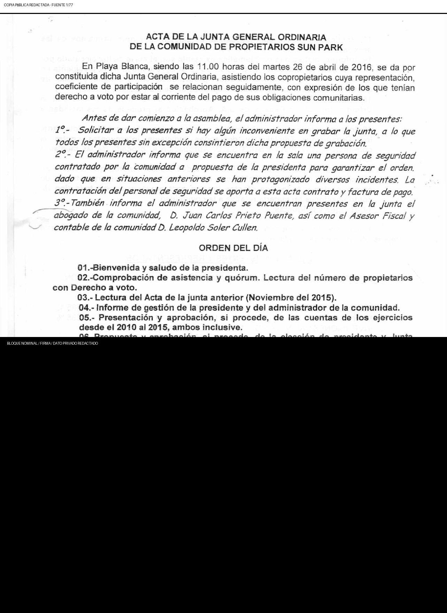
Página fuente 1{kind=link}
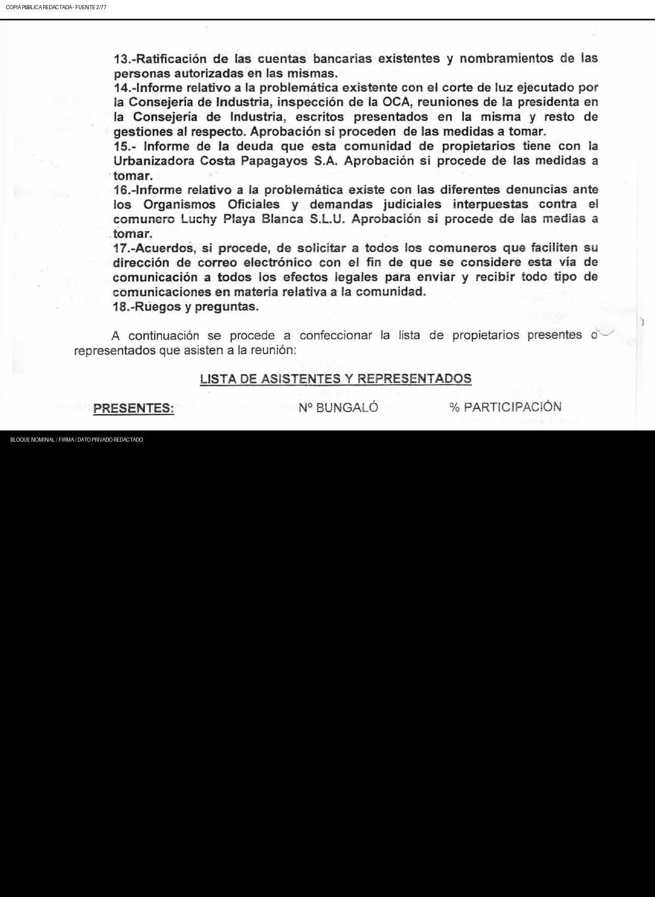
Página fuente 2Página fuente 3{kind=link}
{kind=link}
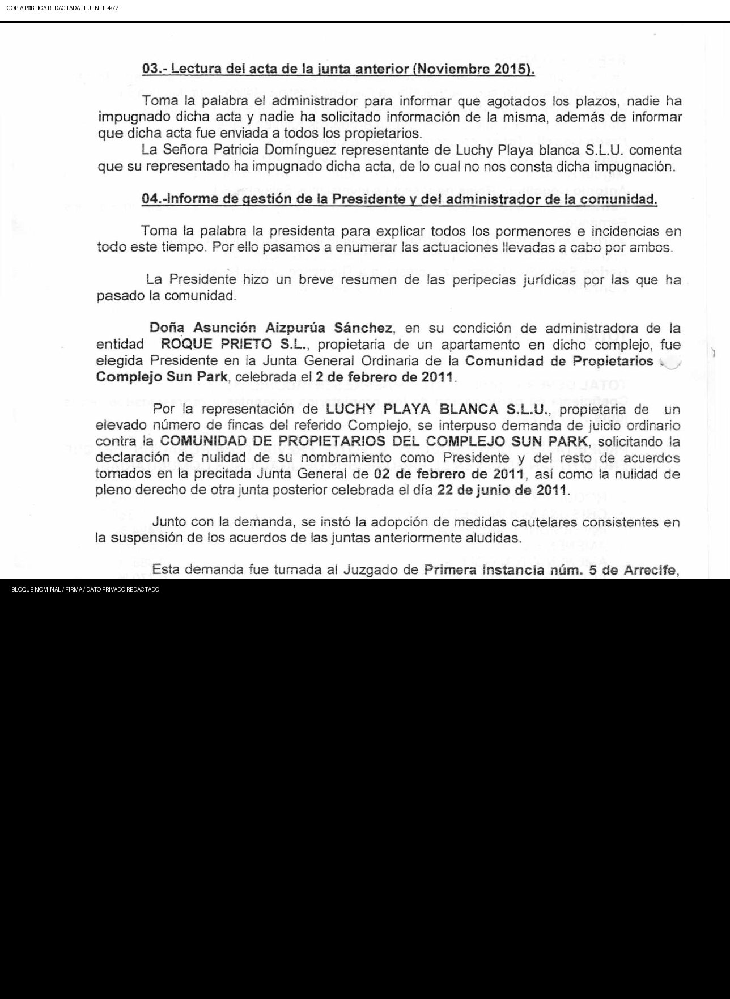
Página fuente 4{kind=link}
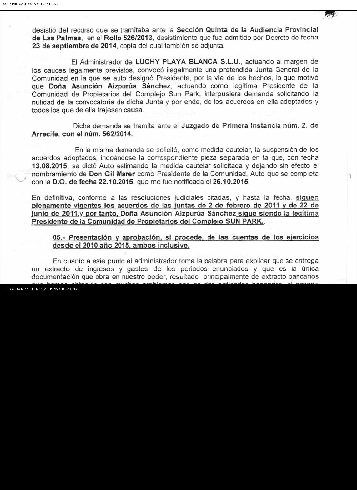
Página fuente 5{kind=link}
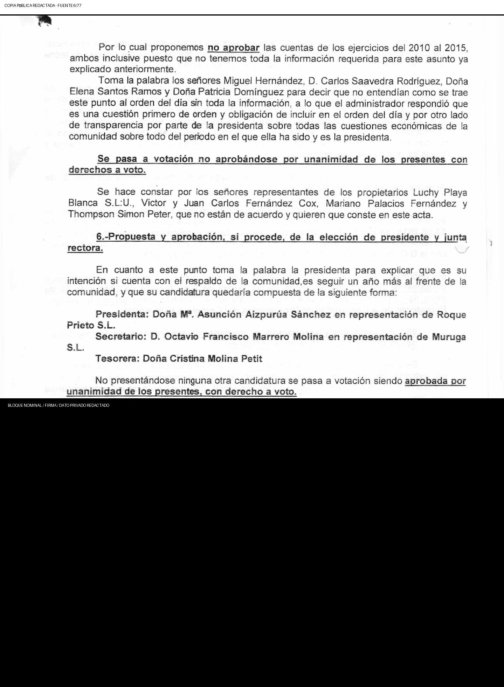
Página fuente 6{kind=link}
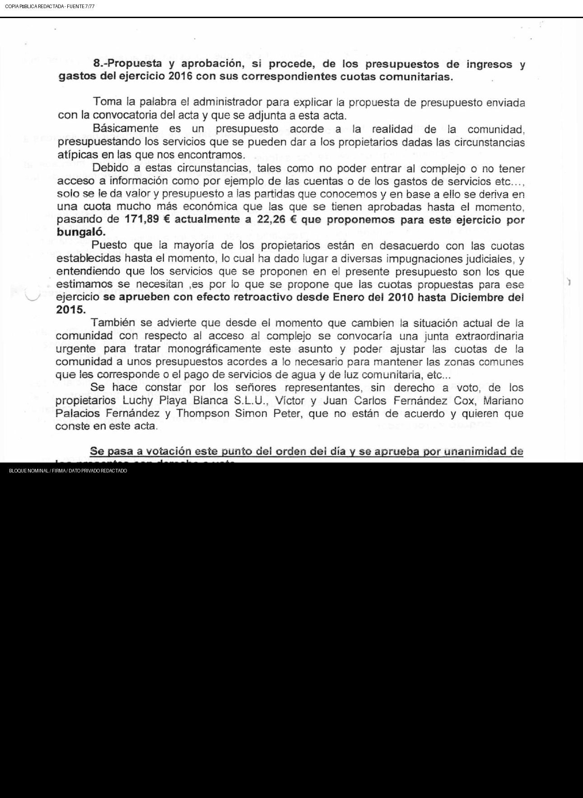
Página fuente 7{kind=link}
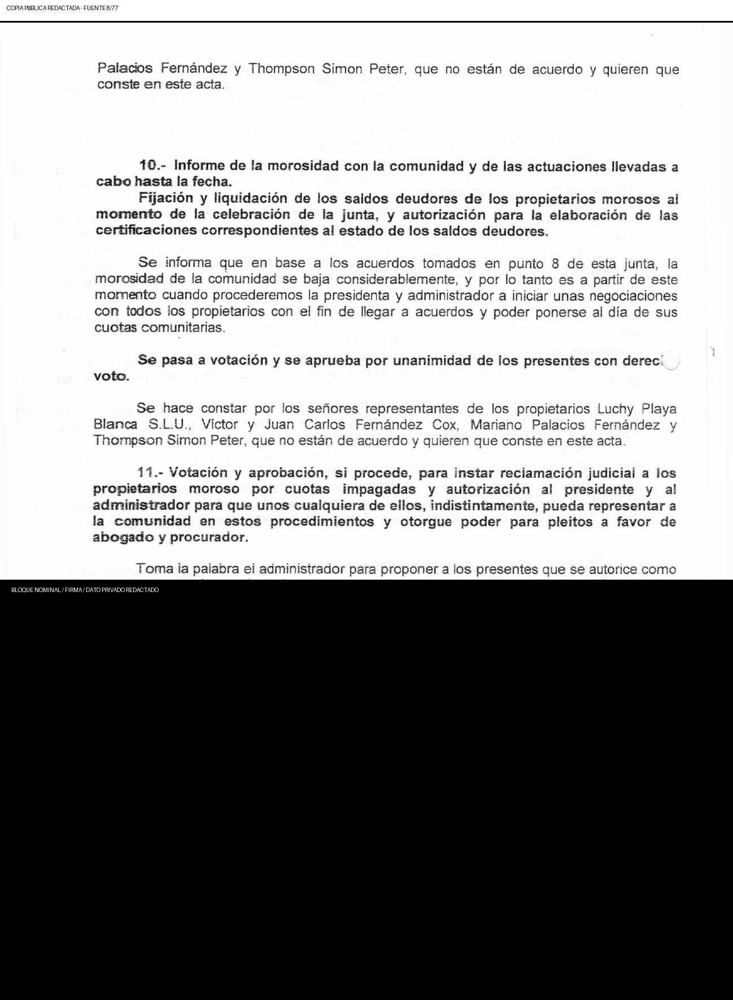
Página fuente 8{kind=link}
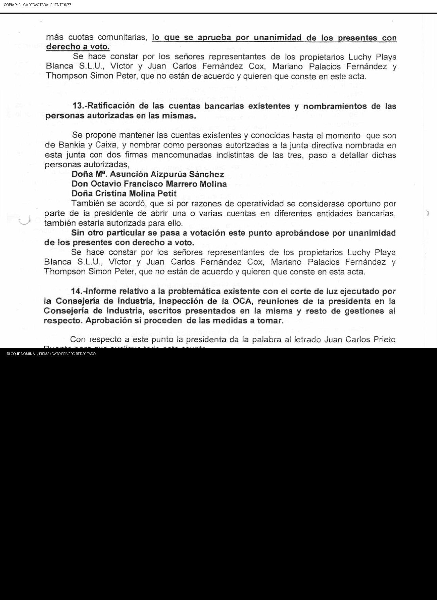
Página fuente 9{kind=link}
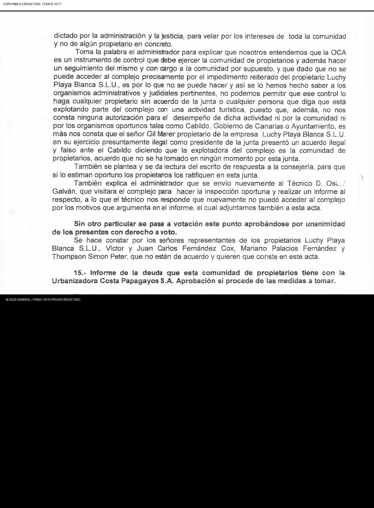
Página fuente 10{kind=link}
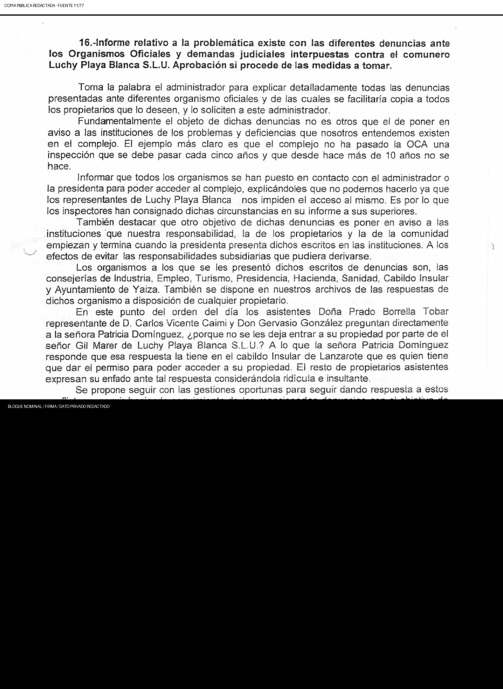
Página fuente 11{kind=link}
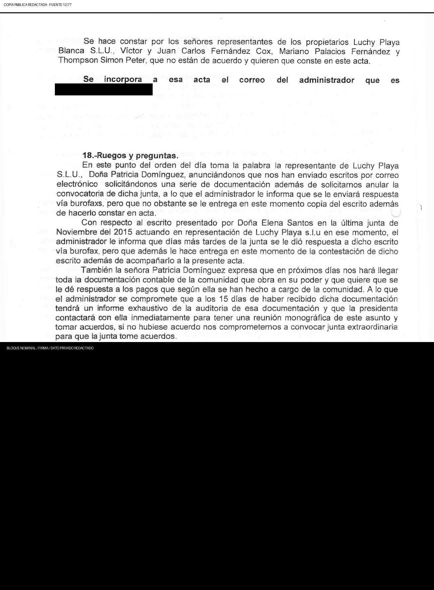
Página fuente 12{kind=link}
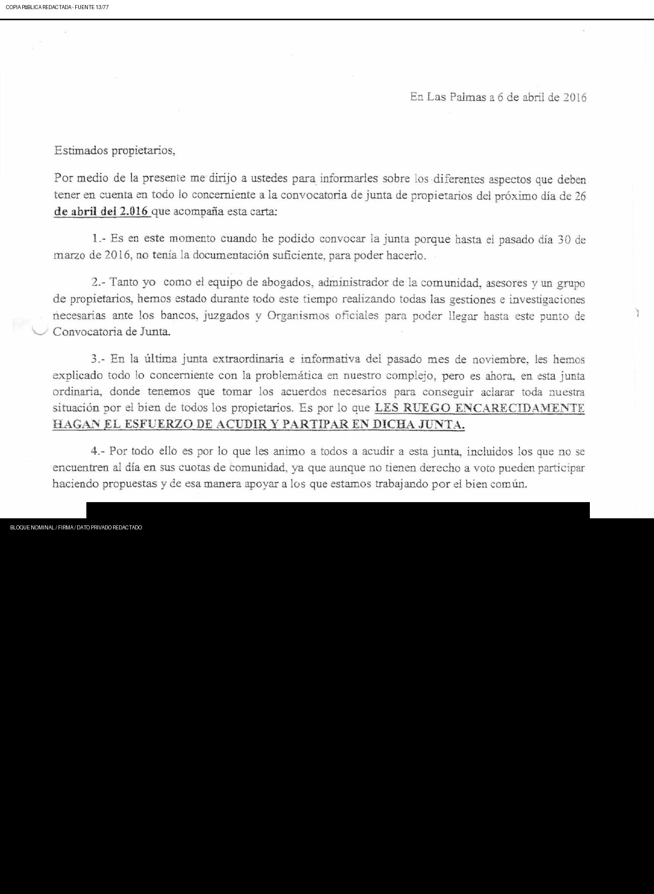
Página fuente 13Página fuente 14Página fuente 15Página fuente 16Página fuente 17Página fuente 18Página fuente 19Página fuente 20Página fuente 21Página fuente 22Página fuente 23Página fuente 24Página fuente 25Página fuente 26Página fuente 27Página fuente 28Página fuente 29Página fuente 30Página fuente 31Página fuente 32Página fuente 33Página fuente 34Página fuente 35Página fuente 36Página fuente 37Página fuente 38Página fuente 39Página fuente 40Página fuente 41Página fuente 42Página fuente 43Página fuente 44Página fuente 45Página fuente 46Página fuente 47Página fuente 48Página fuente 49Página fuente 50Página fuente 51Página fuente 52Página fuente 53Página fuente 54Página fuente 55Página fuente 56Página fuente 57Página fuente 58Página fuente 59Página fuente 60Página fuente 61Página fuente 62Página fuente 63Página fuente 64Página fuente 65Página fuente 66Página fuente 67Página fuente 68Página fuente 69Página fuente 70Página fuente 71Página fuente 72Página fuente 73Página fuente 74Página fuente 75Página fuente 76Página fuente 77{kind=link}
{kind=link}
{kind=link}
{kind=link}
{kind=link}
{kind=link}
{kind=link}
{kind=link}
{kind=link}
{kind=link}
{kind=link}
{kind=link}
{kind=link}
{kind=link}
{kind=link}
{kind=link}
{kind=link}
{kind=link}
{kind=link}
{kind=link}
{kind=link}
{kind=link}
{kind=link}
{kind=link}
{kind=link}
{kind=link}
{kind=link}
{kind=link}
{kind=link}
{kind=link}
{kind=link}
{kind=link}
{kind=link}
{kind=link}
{kind=link}
{kind=link}
{kind=link}
{kind=link}
{kind=link}
{kind=link}
{kind=link}
{kind=link}
{kind=link}
{kind=link}
{kind=link}
{kind=link}
{kind=link}
{kind=link}
{kind=link}
{kind=link}
{kind=link}
{kind=link}
{kind=link}
{kind=link}
{kind=link}
{kind=link}
{kind=link}
{kind=link}
{kind=link}
{kind=link}
{kind=link}
{kind=link}
{kind=link}
{kind=link}
Actores y entidades relacionados
El enlace indica una relación documental específica del evento o una sucesión/contexto expresamente rotulado. No prueba por sí solo mandato, convocatoria, control, actuación conjunta, validez o culpabilidad.
Continuidad